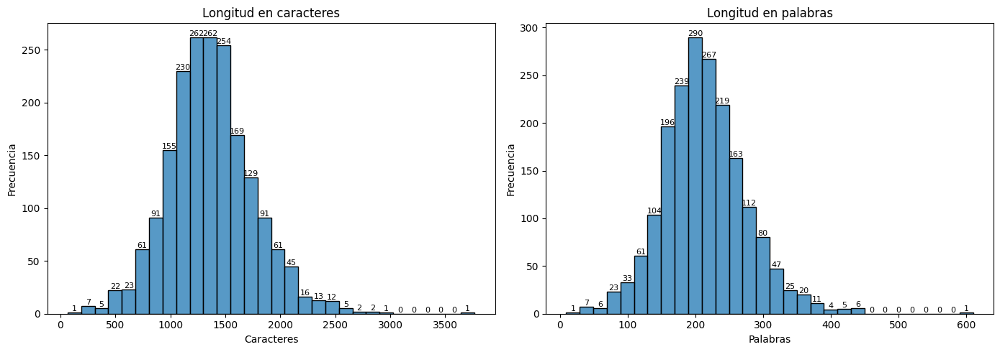
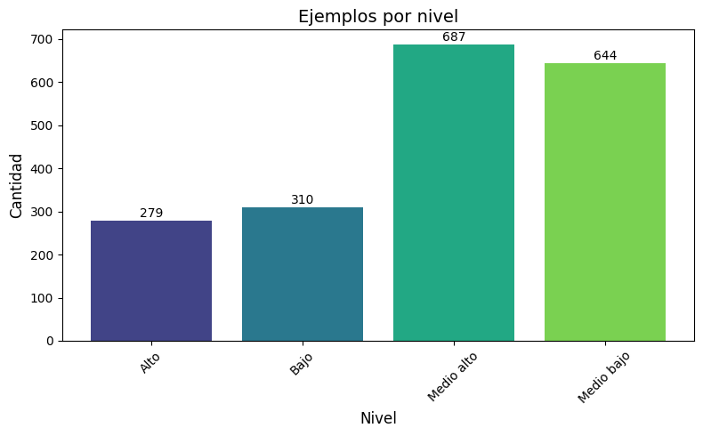
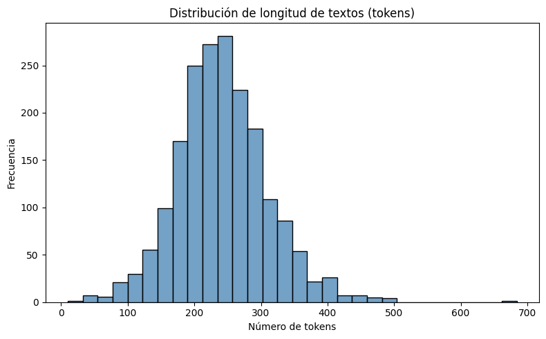
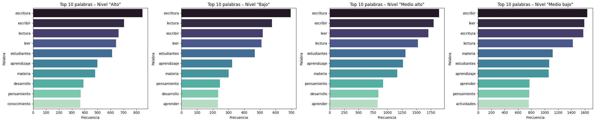

EDA#
clasificador de pruebas ECO Escritura
import pandas as pd
import warnings
warnings.filterwarnings("ignore")
df = pd.read_csv(r"C:\Users\Sistemas\Desktop\PFINAL\docs\nuevo_df.csv", encoding="utf-8-sig")
print("=== Info del DataFrame ===")
df.info()
---------------------------------------------------------------------------
FileNotFoundError Traceback (most recent call last)
Cell In[1], line 5
2 import warnings
3 warnings.filterwarnings("ignore")
----> 5 df = pd.read_csv(r"C:\Users\Sistemas\Desktop\PFINAL\docs\nuevo_df.csv", encoding="utf-8-sig")
7 print("=== Info del DataFrame ===")
8 df.info()
File ~\anaconda3\envs\ml_env\Lib\site-packages\pandas\io\parsers\readers.py:1026, in read_csv(filepath_or_buffer, sep, delimiter, header, names, index_col, usecols, dtype, engine, converters, true_values, false_values, skipinitialspace, skiprows, skipfooter, nrows, na_values, keep_default_na, na_filter, verbose, skip_blank_lines, parse_dates, infer_datetime_format, keep_date_col, date_parser, date_format, dayfirst, cache_dates, iterator, chunksize, compression, thousands, decimal, lineterminator, quotechar, quoting, doublequote, escapechar, comment, encoding, encoding_errors, dialect, on_bad_lines, delim_whitespace, low_memory, memory_map, float_precision, storage_options, dtype_backend)
1013 kwds_defaults = _refine_defaults_read(
1014 dialect,
1015 delimiter,
(...)
1022 dtype_backend=dtype_backend,
1023 )
1024 kwds.update(kwds_defaults)
-> 1026 return _read(filepath_or_buffer, kwds)
File ~\anaconda3\envs\ml_env\Lib\site-packages\pandas\io\parsers\readers.py:620, in _read(filepath_or_buffer, kwds)
617 _validate_names(kwds.get("names", None))
619 # Create the parser.
--> 620 parser = TextFileReader(filepath_or_buffer, **kwds)
622 if chunksize or iterator:
623 return parser
File ~\anaconda3\envs\ml_env\Lib\site-packages\pandas\io\parsers\readers.py:1620, in TextFileReader.__init__(self, f, engine, **kwds)
1617 self.options["has_index_names"] = kwds["has_index_names"]
1619 self.handles: IOHandles | None = None
-> 1620 self._engine = self._make_engine(f, self.engine)
File ~\anaconda3\envs\ml_env\Lib\site-packages\pandas\io\parsers\readers.py:1880, in TextFileReader._make_engine(self, f, engine)
1878 if "b" not in mode:
1879 mode += "b"
-> 1880 self.handles = get_handle(
1881 f,
1882 mode,
1883 encoding=self.options.get("encoding", None),
1884 compression=self.options.get("compression", None),
1885 memory_map=self.options.get("memory_map", False),
1886 is_text=is_text,
1887 errors=self.options.get("encoding_errors", "strict"),
1888 storage_options=self.options.get("storage_options", None),
1889 )
1890 assert self.handles is not None
1891 f = self.handles.handle
File ~\anaconda3\envs\ml_env\Lib\site-packages\pandas\io\common.py:873, in get_handle(path_or_buf, mode, encoding, compression, memory_map, is_text, errors, storage_options)
868 elif isinstance(handle, str):
869 # Check whether the filename is to be opened in binary mode.
870 # Binary mode does not support 'encoding' and 'newline'.
871 if ioargs.encoding and "b" not in ioargs.mode:
872 # Encoding
--> 873 handle = open(
874 handle,
875 ioargs.mode,
876 encoding=ioargs.encoding,
877 errors=errors,
878 newline="",
879 )
880 else:
881 # Binary mode
882 handle = open(handle, ioargs.mode)
FileNotFoundError: [Errno 2] No such file or directory: 'C:\\Users\\Sistemas\\Desktop\\PFINAL\\docs\\nuevo_df.csv'
print("\n=== Primeras filas ===")
print(df.head())
=== Primeras filas ===
id_uni clean_text Nivel_f
0 train_0 otro aspecto que podemos tener en cuenta es la... Medio bajo
1 train_1 En segundo lugar, el aprendizaje de lectura y ... Medio alto
2 train_2 en segundo lugar, fomentando estas practicas d... Medio bajo
3 train_3 En segundo lugar, la lectura y escritura es fu... Medio bajo
4 train_4 La lectura y la escritura son importantes para... Medio bajo
import matplotlib.pyplot as plt
import seaborn as sns
# Longitudes
df['char_count'] = df['clean_text'].str.len()
df['word_count'] = df['clean_text'].str.split().apply(len)
fig, axs = plt.subplots(1, 2, figsize=(14, 5))
# Histograma de caracteres
sns.histplot(df['char_count'], bins=30, ax=axs[0])
axs[0].set(title="Longitud en caracteres", xlabel="Caracteres", ylabel="Frecuencia")
for p in axs[0].patches:
# p.get_height() es la frecuencia de cada bin
axs[0].annotate(int(p.get_height()),
(p.get_x() + p.get_width() / 2, p.get_height()),
ha='center', va='bottom', fontsize=8)
# Histograma de palabras
sns.histplot(df['word_count'], bins=30, ax=axs[1])
axs[1].set(title="Longitud en palabras", xlabel="Palabras", ylabel="Frecuencia")
for p in axs[1].patches:
axs[1].annotate(int(p.get_height()),
(p.get_x() + p.get_width() / 2, p.get_height()),
ha='center', va='bottom', fontsize=8)
plt.tight_layout()
plt.show()

import numpy as np
# 1) Conteo ordenado por nivel
counts = df['Nivel_f'].value_counts().sort_index()
levels = counts.index
values = counts.values
# 2) Creamos un degradado de colores con viridis
colors = plt.cm.viridis(np.linspace(0.2, 0.8, len(levels)))
# 3) Dibujamos el barplot con color explícito
fig, ax = plt.subplots(figsize=(8, 5))
bars = ax.bar(levels, values, color=colors)
# 4) Etiquetas y títulos
ax.set_title("Ejemplos por nivel", fontsize=14)
ax.set_xlabel("Nivel", fontsize=12)
ax.set_ylabel("Cantidad", fontsize=12)
plt.xticks(rotation=45)
# 5) Numerar cada barra
for bar in bars:
height = bar.get_height()
ax.text(
bar.get_x() + bar.get_width() / 2, # X en el centro de la barra
height + 2, # un poco por encima
f"{int(height)}", # texto
ha='center', va='bottom', fontsize=10
)
plt.tight_layout()
plt.show()

Uso de STANZA para conteo de palabras por clase#
# ================================
# 2.X: Conteo de tokens y Top 10 palabras por clase usando Stanza + spaCy
# ================================
import stanza
import spacy
import matplotlib.pyplot as plt
import seaborn as sns
from collections import Counter
# --- 1) Configuración de Stanza y spaCy ---------------------------------------
# stanza.download('es') # Descomenta sólo la primera vez
nlp_stanza = stanza.Pipeline(lang='es',
processors='tokenize',
use_gpu=False) # o True si tu GPU está bien configurada
nlp_spacy = spacy.load('es_core_news_sm') # Modelo sm basta para stopwords
stopwords_es = nlp_spacy.Defaults.stop_words
# --- 2) Función de conteo de tokens -------------------------------------------
def stanza_word_count(text: str) -> int:
"""Devuelve el número de tokens (Stanza) en un texto."""
doc = nlp_stanza(text)
# Cada sentencia es doc.sentences, cada sentence.tokens es lista de tokens
return sum(len(sent.tokens) for sent in doc.sentences)
# --- 3) Añadir columna word_count al DataFrame --------------------------------
df['word_count'] = df['clean_text'].apply(stanza_word_count)
# --- 4) Histograma de longitudes de texto -------------------------------------
plt.figure(figsize=(8,5))
sns.histplot(df['word_count'], bins=30, kde=False, color='steelblue')
plt.title('Distribución de longitud de textos (tokens)')
plt.xlabel('Número de tokens')
plt.ylabel('Frecuencia')
plt.tight_layout()
plt.show()
2025-05-01 18:20:35 INFO: Checking for updates to resources.json in case models have been updated. Note: this behavior can be turned off with download_method=None or download_method=DownloadMethod.REUSE_RESOURCES
Downloading https://raw.githubusercontent.com/stanfordnlp/stanza-resources/main/resources_1.9.0.json: 392kB [00:00, 21.7MB/s]
2025-05-01 18:20:35 INFO: Downloaded file to C:\Users\Sistemas\stanza_resources\resources.json
2025-05-01 18:20:35 WARNING: Language es package default expects mwt, which has been added
2025-05-01 18:20:35 INFO: Loading these models for language: es (Spanish):
========================
| Processor | Package |
------------------------
| tokenize | combined |
| mwt | combined |
========================
2025-05-01 18:20:35 INFO: Using device: cpu
2025-05-01 18:20:35 INFO: Loading: tokenize
2025-05-01 18:20:36 INFO: Loading: mwt
2025-05-01 18:20:36 INFO: Done loading processors!

# ==========================
# Top-10 palabras por nivel en una sola fila
# ==========================
import matplotlib.pyplot as plt
import seaborn as sns
from collections import Counter
# Obtenemos la lista de niveles (asegura orden consistente)
niveles = sorted(df['Nivel_f'].unique())
# Preparamos la figura con 4 subplots en fila
fig, axes = plt.subplots(1, len(niveles), figsize=(24, 5), sharex=False, sharey=False)
for i, nivel in enumerate(niveles):
grupo = df[df['Nivel_f'] == nivel]
tokens_all = []
for txt in grupo['clean_text']:
doc = nlp_stanza(txt)
for sent in doc.sentences:
for tok in sent.tokens:
w = tok.text.lower()
if w.isalpha() and w not in stopwords_es:
tokens_all.append(w)
cnt = Counter(tokens_all)
top10 = cnt.most_common(10)
if top10:
palabras, frecuencias = zip(*top10)
else:
palabras, frecuencias = [], []
ax = axes[i]
sns.barplot(
x=list(frecuencias),
y=list(palabras),
palette='mako',
ax=ax
)
ax.set_title(f'Top 10 palabras – Nivel "{nivel}"')
ax.set_xlabel('Frecuencia')
ax.set_ylabel('Palabra')
plt.tight_layout()
plt.show()
